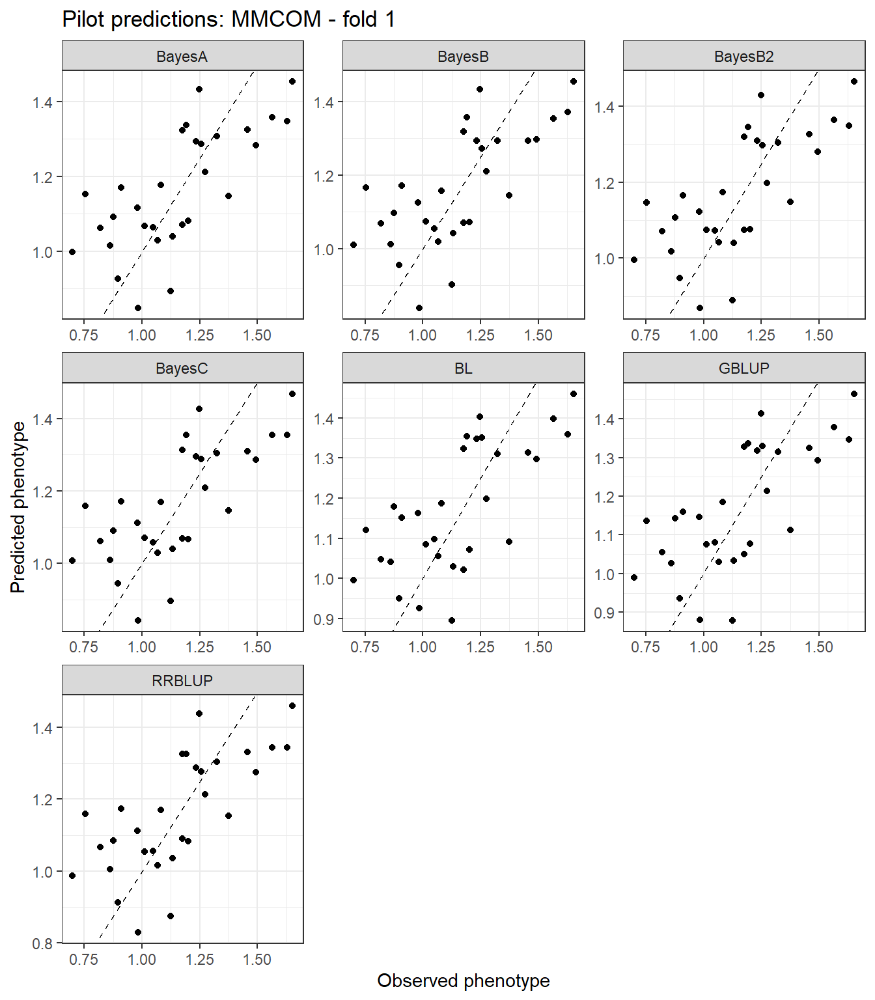

Last updated: 2026-08-05
Checks: 7 0
Knit directory:
Bayesian-ridge-regression-papaya/
This reproducible R Markdown analysis was created with workflowr (version 1.7.2). The Checks tab describes the reproducibility checks that were applied when the results were created. The Past versions tab lists the development history.
Great! Since the R Markdown file has been committed to the Git repository, you know the exact version of the code that produced these results.
Great job! The global environment was empty. Objects defined in the global environment can affect the analysis in your R Markdown file in unknown ways. For reproduciblity it’s best to always run the code in an empty environment.
The command set.seed(20260717) was run prior to running
the code in the R Markdown file. Setting a seed ensures that any results
that rely on randomness, e.g. subsampling or permutations, are
reproducible.
Great job! Recording the operating system, R version, and package versions is critical for reproducibility.
Nice! There were no cached chunks for this analysis, so you can be confident that you successfully produced the results during this run.
Great job! Using relative paths to the files within your workflowr project makes it easier to run your code on other machines.
Great! You are using Git for version control. Tracking code development and connecting the code version to the results is critical for reproducibility.
The results in this page were generated with repository version 775643a. See the Past versions tab to see a history of the changes made to the R Markdown and HTML files.
Note that you need to be careful to ensure that all relevant files for
the analysis have been committed to Git prior to generating the results
(you can use wflow_publish or
wflow_git_commit). workflowr only checks the R Markdown
file, but you know if there are other scripts or data files that it
depends on. Below is the status of the Git repository when the results
were generated:
Ignored files:
Ignored: .Rproj.user/
Ignored: .github/
Ignored: code/
Ignored: data/Bayesiana goiaba Eileen SReport.pdf
Ignored: module03_pilot_seven_methods.zip
Ignored: output/bglr_runs/
Ignored: output/figures/
Ignored: output/matrices/
Ignored: output/models/
Ignored: output/preprocessing/
Ignored: output/tables/
Ignored: papaya_documentation_contract_v1.zip
Ignored: papaya_module01_phenotype_audit_v1.zip
Ignored: papaya_module02_unique_matrices_v1.zip
Ignored: renv/library/
Ignored: renv/staging/
Ignored: tests/
Note that any generated files, e.g. HTML, png, CSS, etc., are not included in this status report because it is ok for generated content to have uncommitted changes.
These are the previous versions of the repository in which changes were
made to the R Markdown (analysis/03_models_en.Rmd) and HTML
(docs/03_models_en.html) files. If you’ve configured a
remote Git repository (see ?wflow_git_remote), click on the
hyperlinks in the table below to view the files as they were in that
past version.
| File | Version | Author | Date | Message |
|---|---|---|---|---|
| Rmd | 775643a | WevertonGomesCosta | 2026-08-05 | feat: add seven-method BGLR pilot |
| Rmd | c54495b | WevertonGomesCosta | 2026-07-23 | refactor: simplify workflowr tutorial structure |
This module first validates the model-fitting contract with one
phenotype and one cross-validation fold. The pilot uses
MMCOM and fold 1.
Seven genomic prediction methods are fitted exclusively with BGLR (Pérez and Campos 2014):
BRR component and
the complete marker matrix M;M;M;M and the zero-effect probability fixed
operationally near \(10^{-5}\);M;M;G and the
BGLR RKHS component.RR-BLUP and Bayesian ridge regression are not fitted as separate
models. The Gaussian marker-effect model implemented by
model = "BRR" is adopted as the RR-BLUP implementation.
The pilot checks code execution, phenotype masking, output structure, prediction finiteness, predictive metrics, and the BayesB2 probability parameter. It is not used for biological conclusions.
BGLR includes an intercept by default and accepts missing values in
the phenotype vector. Therefore, the intercept column is removed from
X before the remaining block and family columns are passed
as fixed effects. For each fold, only the validation phenotypes are
replaced by NA; X, M, and
G remain unchanged.
The reference article defines BayesB2 with \(\pi=10^{-5}\) as the probability of a zero
marker effect (Silva et al. 2021). In BGLR,
probIn is the probability of a non-zero effect. Thus,
BayesB2 uses probIn = 1 - 1e-5. Because BGLR samples this
probability, an extremely concentrated beta prior
(counts = 1e6) is used to keep it operationally fixed at
the reference value.
suppressPackageStartupMessages({
library(BGLR)
library(dplyr)
library(ggplot2)
library(knitr)
library(here)
})MATRICES_FILE <- here(
"output",
"matrices",
"matrices_object.rds"
)
OUTPUT_DIR <- here(
"output",
"models",
"pilot"
)
PILOT_TRAIT <- "MMCOM"
PILOT_FOLD <- 1L
PILOT_N_ITER <- 12000L
PILOT_BURN_IN <- 2000L
PILOT_THIN <- 10L
BAYESB2_ZERO_PROBABILITY <- 1e-5
BAYESB2_PROB_IN <-
1 - BAYESB2_ZERO_PROBABILITY
BAYESB2_COUNTS <- 1e6
dir.create(
OUTPUT_DIR,
recursive = TRUE,
showWarnings = FALSE
)The pilot uses fewer iterations than the final analysis. After the model contract is approved, the complete analysis will use the reference settings: 1,000,000 iterations, 200,000 burn-in iterations, and thinning equal to 4 (Silva et al. 2021).
matrices_object <- readRDS(
MATRICES_FILE
)
ids <- matrices_object$ids
X <- matrices_object$X
M <- matrices_object$M
G <- matrices_object$G
phenotypes <- matrices_object$phenotypes
cv_folds <- matrices_object$cv_folds
X_fixed <- X[
,
colnames(X) != "(Intercept)",
drop = FALSE
]
y_observed <- phenotypes[
,
PILOT_TRAIT
]
validation_index <- which(
cv_folds$Fold == PILOT_FOLD
)
training_index <- which(
cv_folds$Fold != PILOT_FOLD
)
y_model <- y_observed
y_model[validation_index] <- NA_real_input_audit <- data.frame(
Check = c(
"Individuals",
"Fixed-effect columns supplied to BGLR",
"Marker columns",
"Rows and columns of G",
"Observed training phenotypes",
"Masked validation phenotypes",
"Validation individuals",
"Training individuals",
"X row names aligned with IDs",
"M row names aligned with IDs",
"G row names aligned with IDs",
"G column names aligned with IDs"
),
Value = c(
length(ids),
ncol(X_fixed),
ncol(M),
paste(dim(G), collapse = " x "),
sum(!is.na(y_model)),
sum(is.na(y_model)),
length(validation_index),
length(training_index),
identical(rownames(X), ids),
identical(rownames(M), ids),
identical(rownames(G), ids),
identical(colnames(G), ids)
)
)
kable(
input_audit,
caption = "Pilot input audit"
)| Check | Value |
|---|---|
| Individuals | 150 |
| Fixed-effect columns supplied to BGLR | 18 |
| Marker columns | 72 |
| Rows and columns of G | 150 x 150 |
| Observed training phenotypes | 120 |
| Masked validation phenotypes | 30 |
| Validation individuals | 30 |
| Training individuals | 120 |
| X row names aligned with IDs | TRUE |
| M row names aligned with IDs | TRUE |
| G row names aligned with IDs | TRUE |
| G column names aligned with IDs | TRUE |
model_catalogue <- data.frame(
Method = c(
"RR-BLUP",
"BayesA",
"BayesB",
"BayesB2",
"BayesC",
"Bayesian Lasso",
"GBLUP"
),
BGLR_component = c(
"BRR",
"BayesA",
"BayesB",
"BayesB",
"BayesC",
"BL",
"RKHS"
),
Genomic_input = c(
"M",
"M",
"M",
"M",
"M",
"M",
"G"
),
Main_assumption = c(
"Common Gaussian variance for all marker effects",
"Marker-specific scaled-t variances",
"Scaled-t slab and a point mass at zero",
"BayesB with zero-effect probability near 1e-5",
"Common Gaussian slab and a point mass at zero",
"Double-exponential marginal prior",
"Genomic values structured by G"
)
)
kable(
model_catalogue,
caption = "Seven genomic prediction methods in the pilot"
)| Method | BGLR_component | Genomic_input | Main_assumption |
|---|---|---|---|
| RR-BLUP | BRR | M | Common Gaussian variance for all marker effects |
| BayesA | BayesA | M | Marker-specific scaled-t variances |
| BayesB | BayesB | M | Scaled-t slab and a point mass at zero |
| BayesB2 | BayesB | M | BayesB with zero-effect probability near 1e-5 |
| BayesC | BayesC | M | Common Gaussian slab and a point mass at zero |
| Bayesian Lasso | BL | M | Double-exponential marginal prior |
| GBLUP | RKHS | G | Genomic values structured by G |
ETA_models <- list(
RRBLUP = list(
fixed = list(
X = X_fixed,
model = "FIXED"
),
genomic = list(
X = M,
model = "BRR"
)
),
BayesA = list(
fixed = list(
X = X_fixed,
model = "FIXED"
),
genomic = list(
X = M,
model = "BayesA"
)
),
BayesB = list(
fixed = list(
X = X_fixed,
model = "FIXED"
),
genomic = list(
X = M,
model = "BayesB"
)
),
BayesB2 = list(
fixed = list(
X = X_fixed,
model = "FIXED"
),
genomic = list(
X = M,
model = "BayesB",
probIn = BAYESB2_PROB_IN,
counts = BAYESB2_COUNTS
)
),
BayesC = list(
fixed = list(
X = X_fixed,
model = "FIXED"
),
genomic = list(
X = M,
model = "BayesC"
)
),
BL = list(
fixed = list(
X = X_fixed,
model = "FIXED"
),
genomic = list(
X = M,
model = "BL"
)
),
GBLUP = list(
fixed = list(
X = X_fixed,
model = "FIXED"
),
genomic = list(
K = G,
model = "RKHS"
)
)
)Each method receives a deterministic seed and a distinct file prefix.
The validation observations remain absent from y_model
during fitting.
model_names <- names(
ETA_models
)
method_seeds <- setNames(
202608051L + seq_along(model_names) - 1L,
model_names
)
pilot_fits <- vector(
mode = "list",
length = length(model_names)
)
names(pilot_fits) <- model_names
prediction_parts <- vector(
mode = "list",
length = length(model_names)
)
metric_parts <- vector(
mode = "list",
length = length(model_names)
)
for (method_index in seq_along(model_names)) {
method_name <- model_names[method_index]
set.seed(
method_seeds[method_name]
)
fit_start <- proc.time()[["elapsed"]]
pilot_fits[[method_name]] <- BGLR::BGLR(
y = y_model,
ETA = ETA_models[[method_name]],
response_type = "gaussian",
nIter = PILOT_N_ITER,
burnIn = PILOT_BURN_IN,
thin = PILOT_THIN,
saveAt = file.path(
OUTPUT_DIR,
paste0(
"pilot_",
method_name,
"_"
)
),
verbose = FALSE,
rmExistingFiles = TRUE
)
fit_end <- proc.time()[["elapsed"]]
predicted_validation <-
pilot_fits[[method_name]]$yHat[
validation_index
]
observed_validation <-
y_observed[
validation_index
]
prediction_parts[[method_index]] <- data.frame(
IND = ids[validation_index],
Trait = PILOT_TRAIT,
Fold = PILOT_FOLD,
Method = method_name,
Observed = observed_validation,
Predicted = predicted_validation
)
metric_parts[[method_index]] <- data.frame(
Trait = PILOT_TRAIT,
Fold = PILOT_FOLD,
Method = method_name,
Validation_n = length(validation_index),
Correlation = cor(
observed_validation,
predicted_validation
),
RMSE = sqrt(
mean(
(
observed_validation -
predicted_validation
)^2
)
),
MAE = mean(
abs(
observed_validation -
predicted_validation
)
),
DIC =
pilot_fits[[method_name]]$fit$DIC,
Effective_parameters =
pilot_fits[[method_name]]$fit$pD,
Log_likelihood_at_posterior_mean =
pilot_fits[[method_name]]$fit$
logLikAtPostMean,
Residual_variance =
pilot_fits[[method_name]]$varE,
Elapsed_seconds =
fit_end - fit_start,
Finite_predictions = all(
is.finite(
predicted_validation
)
)
)
}pilot_predictions <- do.call(
rbind,
prediction_parts
)
pilot_metrics <- do.call(
rbind,
metric_parts
)
rownames(pilot_predictions) <- NULL
rownames(pilot_metrics) <- NULL
bayesb_probability_audit <- data.frame(
Method = c(
"BayesB",
"BayesB2",
"BayesC"
),
Prior_nonzero_probability = c(
NA_real_,
BAYESB2_PROB_IN,
NA_real_
),
Posterior_nonzero_probability = c(
pilot_fits[["BayesB"]]$ETA$
genomic$probIn,
pilot_fits[["BayesB2"]]$ETA$
genomic$probIn,
pilot_fits[["BayesC"]]$ETA$
genomic$probIn
)
)
rrblup_predictions <- pilot_predictions$Predicted[
pilot_predictions$Method == "RRBLUP"
]
gblup_predictions <- pilot_predictions$Predicted[
pilot_predictions$Method == "GBLUP"
]
rrblup_gblup_audit <- data.frame(
Comparison = "RR-BLUP versus GBLUP",
Prediction_correlation = cor(
rrblup_predictions,
gblup_predictions
),
Maximum_absolute_difference = max(
abs(
rrblup_predictions -
gblup_predictions
)
),
Mean_absolute_difference = mean(
abs(
rrblup_predictions -
gblup_predictions
)
)
)
pilot_audit <- data.frame(
Check = c(
"Methods fitted",
"Validation individuals per method",
"Total prediction rows",
"Finite predictions",
"Complete metric rows",
"BayesB2 posterior probIn",
"Absolute BayesB2 probIn deviation"
),
Expected = c(
"7",
"30",
"210",
"TRUE",
"7",
format(BAYESB2_PROB_IN, digits = 8),
"close to 0"
),
Observed = c(
length(model_names),
unique(pilot_metrics$Validation_n),
nrow(pilot_predictions),
all(pilot_metrics$Finite_predictions),
nrow(pilot_metrics),
format(
pilot_fits[["BayesB2"]]$ETA$
genomic$probIn,
digits = 8
),
format(
abs(
pilot_fits[["BayesB2"]]$ETA$
genomic$probIn -
BAYESB2_PROB_IN
),
scientific = TRUE
)
)
)write.csv(
pilot_predictions,
file.path(
OUTPUT_DIR,
"pilot_predictions.csv"
),
row.names = FALSE
)
write.csv(
pilot_metrics,
file.path(
OUTPUT_DIR,
"pilot_metrics.csv"
),
row.names = FALSE
)
write.csv(
bayesb_probability_audit,
file.path(
OUTPUT_DIR,
"pilot_bayesb_probability_audit.csv"
),
row.names = FALSE
)
write.csv(
rrblup_gblup_audit,
file.path(
OUTPUT_DIR,
"pilot_rrblup_gblup_audit.csv"
),
row.names = FALSE
)
write.csv(
pilot_audit,
file.path(
OUTPUT_DIR,
"pilot_execution_audit.csv"
),
row.names = FALSE
)
saveRDS(
list(
fits = pilot_fits,
predictions = pilot_predictions,
metrics = pilot_metrics,
bayesb_probability_audit =
bayesb_probability_audit,
rrblup_gblup_audit =
rrblup_gblup_audit,
execution_audit = pilot_audit,
settings = list(
trait = PILOT_TRAIT,
fold = PILOT_FOLD,
n_iter = PILOT_N_ITER,
burn_in = PILOT_BURN_IN,
thin = PILOT_THIN,
bayesb2_zero_probability =
BAYESB2_ZERO_PROBABILITY,
bayesb2_prob_in =
BAYESB2_PROB_IN,
bayesb2_counts =
BAYESB2_COUNTS,
seeds = method_seeds
)
),
file.path(
OUTPUT_DIR,
"pilot_models_object.rds"
)
)pilot_metrics |>
arrange(
desc(Correlation),
RMSE
) |>
kable(
digits = 6,
caption = "Predictive metrics and fitting diagnostics for the pilot"
)| Trait | Fold | Method | Validation_n | Correlation | RMSE | MAE | DIC | Effective_parameters | Log_likelihood_at_posterior_mean | Residual_variance | Elapsed_seconds | Finite_predictions |
|---|---|---|---|---|---|---|---|---|---|---|---|---|
| MMCOM | 1 | BayesB2 | 30 | 0.705395 | 0.177569 | 0.152514 | 2.549141 | 30.34029 | 29.06572 | 0.047083 | 1.08 | TRUE |
| MMCOM | 1 | BayesA | 30 | 0.703514 | 0.177467 | 0.150892 | 2.005775 | 31.04186 | 30.03897 | 0.046349 | 0.92 | TRUE |
| MMCOM | 1 | BayesC | 30 | 0.699450 | 0.178372 | 0.152187 | 1.932728 | 31.21585 | 30.24948 | 0.046340 | 0.94 | TRUE |
| MMCOM | 1 | RRBLUP | 30 | 0.697737 | 0.178220 | 0.149665 | 1.618356 | 31.83207 | 31.02289 | 0.045774 | 0.80 | TRUE |
| MMCOM | 1 | GBLUP | 30 | 0.694799 | 0.179742 | 0.155705 | 1.971281 | 27.04919 | 26.06355 | 0.048003 | 0.79 | TRUE |
| MMCOM | 1 | BayesB | 30 | 0.693276 | 0.179883 | 0.153721 | 2.331446 | 31.39156 | 30.22583 | 0.046478 | 1.11 | TRUE |
| MMCOM | 1 | BL | 30 | 0.687417 | 0.182132 | 0.159181 | 2.734079 | 24.39409 | 23.02705 | 0.049354 | 1.21 | TRUE |
kable(
bayesb_probability_audit,
digits = 8,
caption = "Non-zero-effect probability audit"
)| Method | Prior_nonzero_probability | Posterior_nonzero_probability |
|---|---|---|
| BayesB | NA | 0.4140403 |
| BayesB2 | 0.99999 | 0.9999892 |
| BayesC | NA | 0.4480326 |
kable(
rrblup_gblup_audit,
digits = 8,
caption = "Diagnostic comparison of RR-BLUP and GBLUP predictions"
)| Comparison | Prediction_correlation | Maximum_absolute_difference | Mean_absolute_difference |
|---|---|---|---|
| RR-BLUP versus GBLUP | 0.9887153 | 0.05795952 | 0.02004877 |
kable(
pilot_audit,
caption = "Pilot execution audit"
)| Check | Expected | Observed |
|---|---|---|
| Methods fitted | 7 | 7 |
| Validation individuals per method | 30 | 30 |
| Total prediction rows | 210 | 210 |
| Finite predictions | TRUE | TRUE |
| Complete metric rows | 7 | 7 |
| BayesB2 posterior probIn | 0.99999 | 0.99998916 |
| Absolute BayesB2 probIn deviation | close to 0 | 8.374689e-07 |
ggplot(
pilot_predictions,
aes(
x = Observed,
y = Predicted
)
) +
geom_point() +
geom_abline(
intercept = 0,
slope = 1,
linetype = 2
) +
facet_wrap(
~ Method,
scales = "free"
) +
labs(
x = "Observed phenotype",
y = "Predicted phenotype",
title = paste(
"Pilot predictions:",
PILOT_TRAIT,
"- fold",
PILOT_FOLD
)
) +
theme_bw()
The pilot is approved for expansion only when:
probIn remains extremely close to
0.99999;After this gate is approved, the same contract will be expanded to 10
traits, 5 folds, and 7 methods, totaling 350 fits. The complete analysis
will preserve the same global X, M, and
G matrices and will change only the masked phenotype
vector.
sessionInfo()R version 4.5.1 (2025-06-13 ucrt)
Platform: x86_64-w64-mingw32/x64
Running under: Windows 11 x64 (build 26200)
Matrix products: default
LAPACK version 3.12.1
locale:
[1] LC_COLLATE=Portuguese_Brazil.utf8 LC_CTYPE=Portuguese_Brazil.utf8
[3] LC_MONETARY=Portuguese_Brazil.utf8 LC_NUMERIC=C
[5] LC_TIME=Portuguese_Brazil.utf8
time zone: America/Sao_Paulo
tzcode source: internal
attached base packages:
[1] stats graphics grDevices datasets utils methods base
other attached packages:
[1] here_1.0.2 knitr_1.51 ggplot2_4.0.3 dplyr_1.2.1
[5] BGLR_1.1.4 workflowr_1.7.2
loaded via a namespace (and not attached):
[1] gtable_0.3.6 jsonlite_2.0.0 compiler_4.5.1 renv_1.2.3
[5] promises_1.5.0 tidyselect_1.2.1 Rcpp_1.1.2 stringr_1.6.0
[9] git2r_0.36.2 callr_3.8.0 later_1.4.8 jquerylib_0.1.4
[13] scales_1.4.0 yaml_2.3.12 fastmap_1.2.0 R6_2.6.1
[17] labeling_0.4.3 generics_0.1.4 MASS_7.3-66 tibble_3.3.1
[21] rprojroot_2.1.1 RColorBrewer_1.1-3 bslib_0.11.0 pillar_1.11.1
[25] rlang_1.3.0 cachem_1.1.0 stringi_1.8.7 httpuv_1.6.17
[29] xfun_0.60 S7_0.2.2 getPass_0.2-4 fs_2.1.0
[33] sass_0.4.10 otel_0.2.0 truncnorm_1.0-9 cli_3.6.6
[37] withr_3.0.3 magrittr_2.0.5 grid_4.5.1 digest_0.6.39
[41] processx_3.9.0 rstudioapi_0.19.0 lifecycle_1.0.5 vctrs_0.7.3
[45] evaluate_1.0.5 glue_1.8.1 farver_2.1.2 whisker_0.4.1
[49] rmarkdown_2.31 httr_1.4.8 tools_4.5.1 pkgconfig_2.0.3
[53] htmltools_0.5.9 Weverton Gomes da Costa, Postdoctoral Researcher, Department of Statistics - Federal University of Viçosa, weverton.costa@ufv.br↩︎